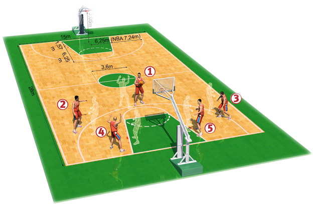

Pozycje na boisku
Pozycje na boisku
Rozgrywający – point guard (PG), tzw. "1"
Zawodnik na pozycji rozgrywającego kreuje grę zespołu. Jest to przeważnie najniższy gracz w zespole,
mierzący 175-190 cm dlatego powinien posiadać duży wyskok ok. 100 cm. Często jest on
liderem drużyny, drugą ręką trenera.
Pozycja ta wymaga od zawodnika następujących umiejętności:
- przegląd pola w celu szukania podania
- podanie musi mieć opanowane do perfekcji
- świetny kozioł, ponieważ ma on najdłużej z drużyny kontakt z piłką
- szybkość i zwinność w celu szybkiego urwaniu się obrońcy po wyjście do piłki
- przechwyty w obronie
- skuteczne rzuty za 3 pkt.
Rzucający obrońca – shooting guard (SG), tzw. "2
Zawodnik na pozycji rzucającego obrońcy przeważnie jest liderem zespołu. Powinien posiadać umiejętności
pozwalające mu na zdobywanie wielu punktów. Gracz na tej pozycji mierzy przeciętnie 185-200 cm.
Pozycja ta wymaga od zawodnika następujących umiejętności:
- łatwość zdobywania punktów, zdobywa przeważnie najwięcej pkt. w drużynie
- dobry kozioł, często zastępuje rozgrywającego
- wysoka skuteczność rzutowa
- bardzo dobry obrońca, dużo przechwytów
- powinien umieć zastąpić rozgrywającego
Niski skrzydłowy – small forward (SF), tzw. "3"
Zawodnik na tej pozycji wspiera niższych i wyższych graczy. Jest to zawodnik mierzący
195-205 cm wzrostu. Często zawodnik na tej pozycji ma zadania specjalne, taki jak wyłączenie lidera
przeciwnego zespołu z gry. Niski skrzydłowy musi być graczem wszechstronnym.
Powinien posiadać umiejętnośći: Graczy niskich
- podania
- kozioł
- przechwyty
- rzuty za 3pkt
Powinien posiadać umiejętnośći: Graczy wysokich
- gra pod koszem
- zbiórki
- bloki
Silny skrzydłowy – power forward (PF), tzw. "4"
Klasyczny silny skrzydłowy ma ok. 205-213 cm wzrostu. Od gracza na tej pozycji oczekuje się przede wszystkich dobrej
gry w obronie ale również pomaganiu swoim kolegą w ataku, np. poprzez stawianie zasłon.
Pozycja ta wymaga od zawodnika następujących umiejętności:
- zbiórki w obronie, jak i ataku
- obrona podkoszowa
- dobry rzut z półdystansu
- gra tyłem do kosza
- stawianie zasłon
Środkowy – center (C), tzw. "5"
Center to zazwyczaj najwyższy gracz w zespole, mierzący przeciętnie 210-220 cm. . Center powinien władać ogromną siłą fizyczną oraz umieć grać prostą grę kombinacyjną..
Pozycja ta wymaga od zawodnika następujących umiejętności:
- technika podkoszowa
- zdobywanie punktów spod kosza
- zbieranie piłek z tablicy
- blokowanie rzutów
- stawianie zasłon
Wizualizacja pozycji

Moje hobby. Copyright © Wszystkie prawa zastrzeżone